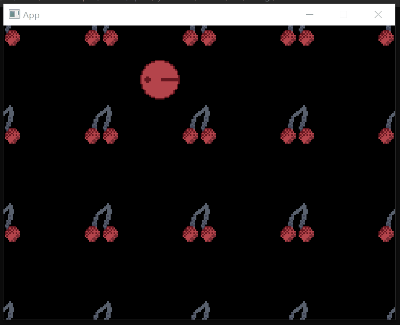
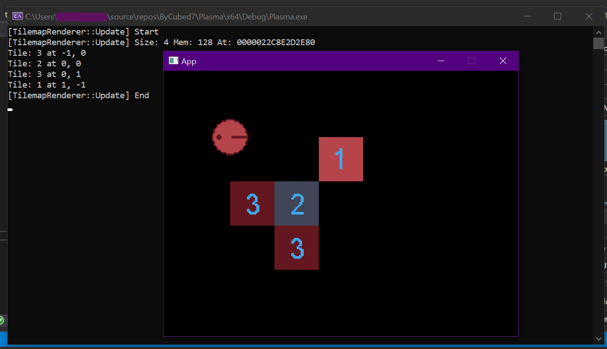
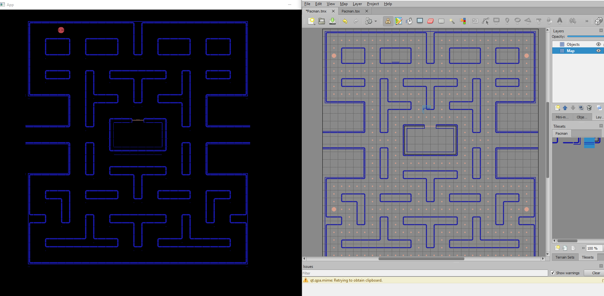
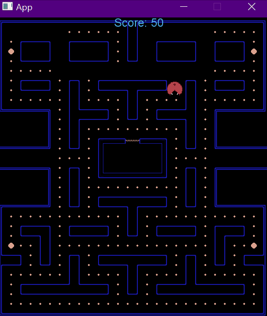

Sprites and Animations
Created a generic Renderable class to be used in renderable objects, like textures and fonts.
class Texture2D
: public Resource<Texture2D>, public Renderable<Texture2D>
...
Which changes our usage from:
renderer.sprite.DrawSprite(...);
renderer.text.DrawText(...);
ect.
To:
Texture2D::Draw(...);
Text::Draw(...);
Now we no longer need a referenced SpriteRenderer instance in order to render a texture on to the screen.
Also making it easier to read. üòÑ
Component Oriented Programming
When it came to designing the components for the engine, I took inspiration from the architecture used in Unity,
structuring each component to be self-contained and able to communicate with others through event handlers.
To keep the design flexible, I made sure to decouple the components as much as possible so that they can
be easily added, removed or replaced without affecting the rest of the application. This allows for greater
modularity and reduces the risk of bugs caused by complex inter-dependencies.
However, it's important to note that the components currently only support sequential execution and do
not have the capability to handle multi-threaded processing. This is something I plan to address in
future iterations of the engine, but for now, the focus was on building a solid foundation for future
expansion.
namespace Engine {
// Forward Declaration
class Scene;
class GameObject;
class Component : public Object
{
public:
Component(GameObject* gameObject, std::string name = "Component");
GameObject* gameObject;
Engine::Scene* scene;
virtual void Update(double time, double delta, Engine::Scene& game);
virtual void Draw(Render::Renderers& renderer);
};
}
Colliders and Efficiencies
I began working on the collision dection for detecting responding to collisions between components.
After researching various methods for implementing Colliders, I decided to utilize the classical
Axis-Aligned Bounding Box method. These provide sufficient collision detection, though it should
be noted that more advanced collision detection methods, such as polygonal colliders,
may be required for more complex games in the future.
Event Handlers
While researching how one would go about executing Event-Driven Architecture in C++, I found a well
documented resource on a simple implementation and used that to implement my basics of the observer pattern.
However there are some severe limitation of the design, such as the inability to handle events in different threads;
Though, at this point in time, I was not planning so far ahead just yet.
template<typename T>
class Event
{
public:
// Constructors
Event() = default;
Event(T type, const std::string& name = "")
: _type(type), _name(name) {};
inline const T type() const { return _type; };
inline const std::string& getName() const { return _name; };
virtual bool isHandled() { return _handled; };
protected:
T _type;
std::string _name;
bool _handled = false;
};
Tilemaps and Instancing
Tilemaps allow for the creation of vast game worlds with a minimal amount of data.
I implemented tilemaps using a 2D array of integers, where each integer represents
a specific tile type. This allows for efficient storage and fast access to the tile data.
Rendering the tile instances is handled by a separate componant that takes the tilemap
data and creates a visual representation of the tiles on the screen. The rendering
component uses the tile types to determine which sprite to use for each tile, ensuring
that the correct visual is applied.


Tiled, Rotations and Save data!

After some tilemap rework, I implemented pellets pickups and a simple score display.
By around I had finished this, the deadline of the assignment was within a few days



 I found it overly saturated here and later softed the fur colour to a more lighter blonde.
I found it overly saturated here and later softed the fur colour to a more lighter blonde.


 You can download and play around with the capybara above! üëÜ
You can download and play around with the capybara above! üëÜ